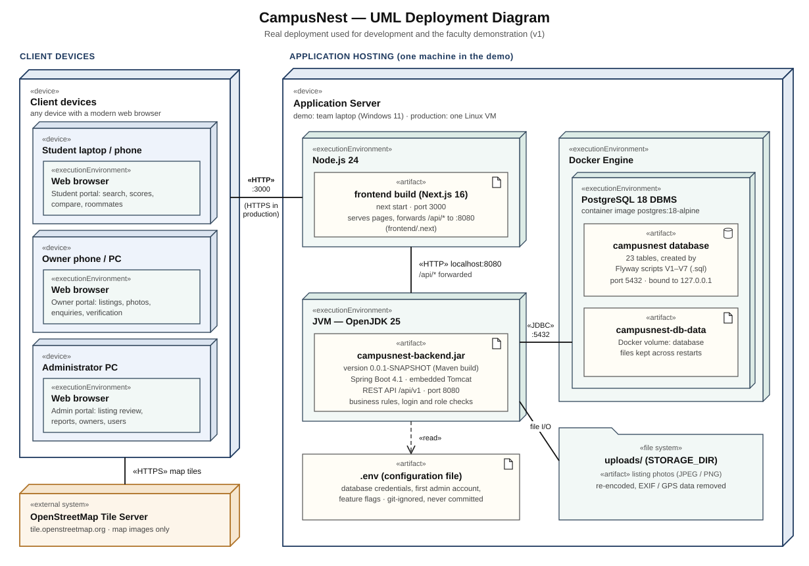

Students, owners and administrators use CampusNest from any device with a web browser; each role gets its
own portal in the same web application. The browser talks only to the Node.js server on port 3000, which
serves the Next.js pages and forwards /api/* calls to the Spring Boot backend on the same machine
(port 8080). The backend .jar runs on the JVM (OpenJDK 25): it applies the business rules,
processes login, CSRF and role checks, reads its settings from the .env file, stores listing photos in the
uploads/ folder and connects to PostgreSQL 18 over JDBC. PostgreSQL runs in a Docker
container whose port is bound to 127.0.0.1, so other computers cannot reach the database directly. Map images
are loaded by the browser straight from the OpenStreetMap tile server over HTTPS.
http://localhost:3000.| Node / environment | Kind | Artifacts deployed |
|---|---|---|
| Student / Owner / Admin device | «device» | Web browser showing the matching portal |
| Application Server | «device» | hosts everything below |
| Node.js 24 | «executionEnvironment» | frontend build (Next.js 16, frontend/.next) |
| JVM — OpenJDK 25 | «executionEnvironment» | campusnest-backend-0.0.1-SNAPSHOT.jar |
| Docker Engine → PostgreSQL 18 DBMS | «executionEnvironment» | campusnest database (Flyway V1–V7 scripts), volume campusnest-db-data |
| Server file system | «file system» | uploads/ — listing photos; .env configuration (git-ignored) |
| OpenStreetMap Tile Server | «external system» | not deployed by the team |
| From → To | Protocol | Purpose |
|---|---|---|
| Browser → Node.js | HTTP :3000 (HTTPS in production) | pages and /api/* requests |
| Node.js → JVM | HTTP localhost:8080 | forwarded REST API calls |
| JVM → PostgreSQL | JDBC over TCP :5432 | read and write data |
| JVM → uploads/ | file I/O | save and serve photos |
| Browser → OpenStreetMap | HTTPS | map tiles |